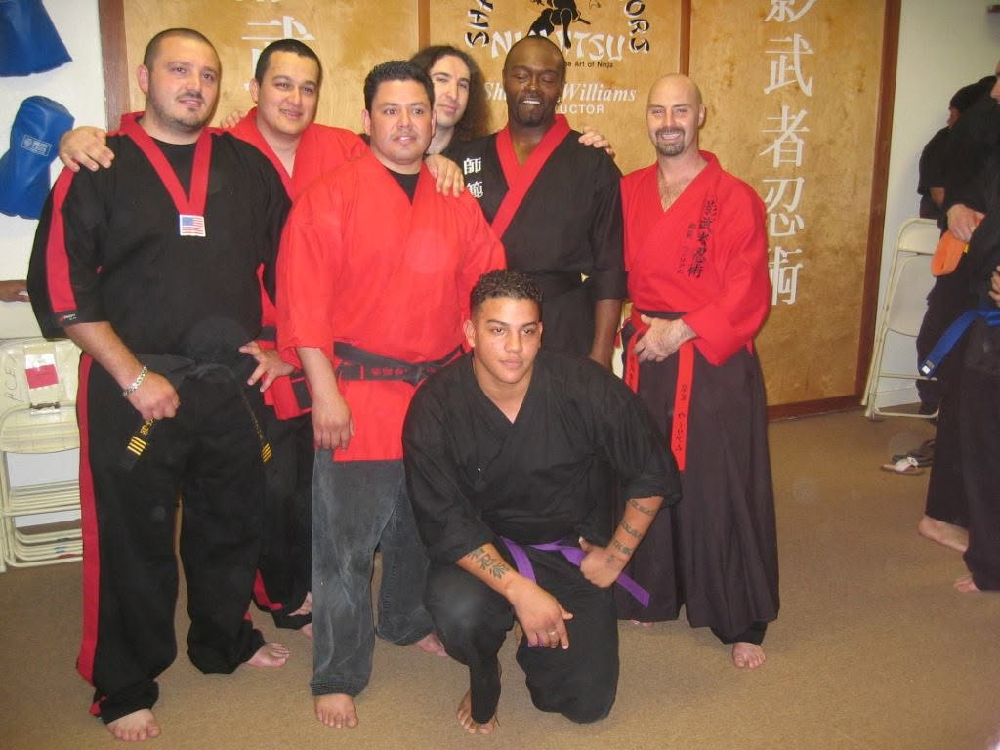
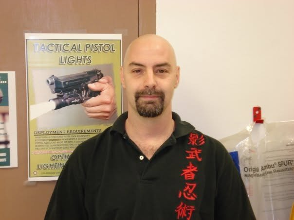
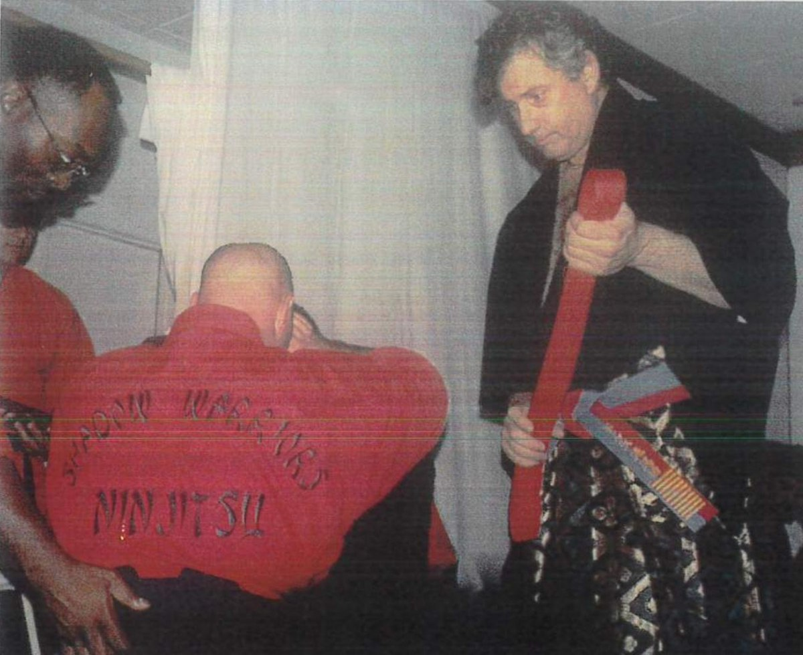
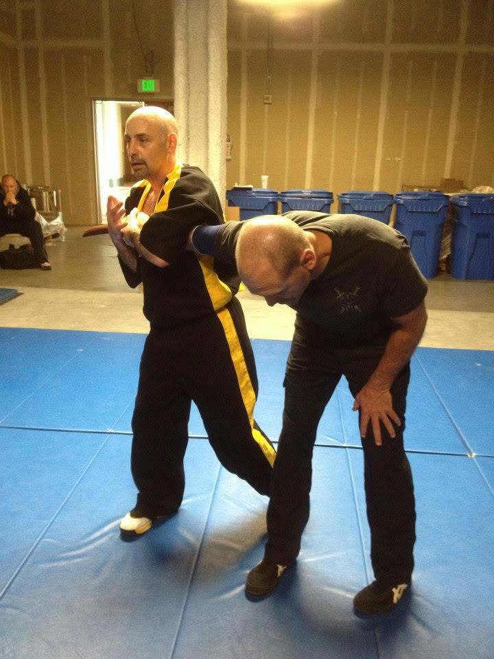
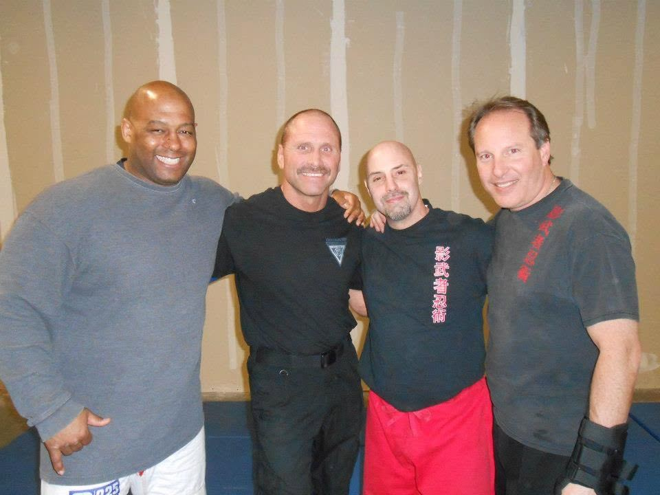
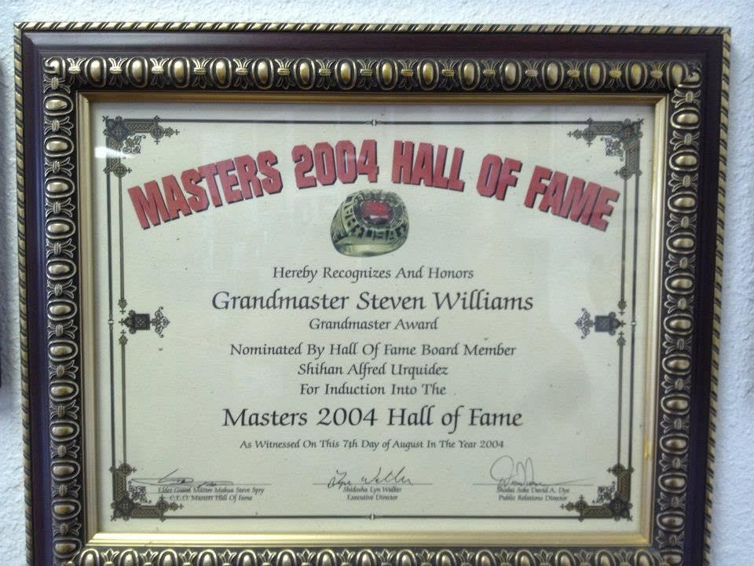

Shadow Warriors Ninjitsu is not a franchise, and it is not a curriculum borrowed from someone else. It is an original system — developed, tested, and refined over 53 years of martial arts study, competition, and real-world instruction.
Soke Shidoshi Steven Williams built this system from the ground up, drawing on formal rank across multiple traditional disciplines and decades spent teaching civilians, law enforcement, and military personnel the difference between technique that looks good and technique that works under real pressure.
Personal and professional references available upon request.



